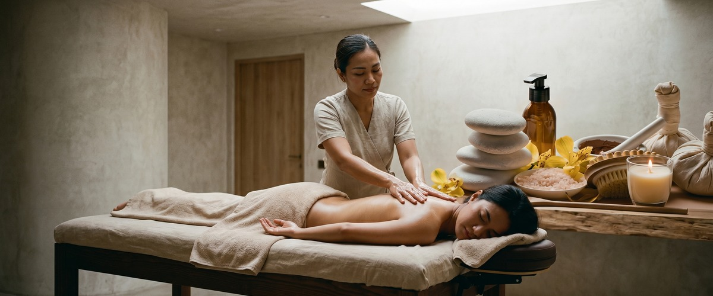
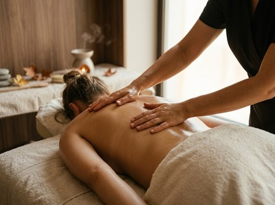
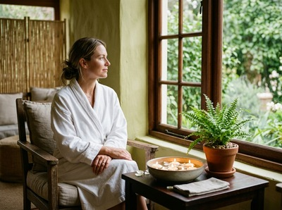

If stress has settled into your muscles, your sleep has suffered, or you simply need to feel restored, Thai aromatherapy massage in Greenock offers something beyond standard relaxation.

At Thai Massage Greenock, this treatment combines the therapeutic touch of traditional Thai technique with the mood-lifting power of pure essential oils.
Thai aromatherapy massage blends East and West. It brings together Thai-style deep tissue work and assisted stretching along the body's sen energy lines, with flowing Swedish-style strokes using therapeutic-grade essential oils. The oils are chosen for what they do: lavender to calm the nervous system, peppermint to ease sore muscles, eucalyptus to clear the mind. You absorb them through your skin and breathe them in, which adds to the physical benefits of the massage itself.

Sessions are carried out on a massage table. Jariya selects and blends the oils to suit how you feel that day. Every treatment is tailored, not a standard routine.
This treatment suits anyone carrying both physical and emotional tension. It works well for people dealing with stress-related muscle tightness, poor sleep, or low mood. If standard massage feels too intense but you still want real results, this gives you depth without discomfort. It is also a strong choice if you are returning to regular massage after a break.
Before you start, Jariya will ask how you are feeling and check for any oil preferences or skin sensitivities. You will be asked to undress to your comfort level, with full draping used throughout. Sessions run for 60 or 90 minutes.

The treatment moves through long, flowing strokes and areas of targeted pressure, with gentle stretching where needed. The scent of your chosen oils will fill the room throughout. Most clients leave feeling calm and grounded. Drink water when you get home to help your body process the treatment. You can book your session online and note any oil preferences in the booking form.
Thai Massage Greenock is run by Jariya Malone, a certified therapist trained at Bangkok's Wat Po temple — the acknowledged home of traditional Thai massage. Every treatment at the South Street studio is delivered by Jariya personally, using authentic technique built over years of practice. If you would like to talk through which treatment suits you best, get in touch to arrange a session or explore our full range including Traditional Thai Massage and Thai Oil Massage.
Yes. The oils are applied directly to the skin, so you will need to undress. Full draping with a towel or sheet is used throughout. Jariya will leave the room while you get settled. Only the area being worked on will be uncovered at any time.
Sessions are available in 60 or 90 minutes. Sixty minutes covers the key areas of tension well. Ninety minutes allows for a fuller, more thorough treatment. If it is your first visit, 90 minutes gives Jariya more time to assess your needs and adjust as she goes.
Most clients leave feeling relaxed, calm, and mentally clear. Some feel slightly sleepy for an hour or two. This is a normal sign that the nervous system is settling. Drink plenty of water after your session and try not to rush straight back into a busy day.
For stress management and general wellbeing, once every two to four weeks works well for most people. If you are dealing with ongoing tension, poor sleep, or a stressful period, weekly sessions for a month can make a clear difference. Jariya will advise based on how your body responds.
Both treatments use oils applied to the skin. Thai aromatherapy massage also uses specific essential oil blends chosen for their effect on mood and the nervous system. You absorb them through your skin and breathe them in throughout the session. Thai oil massage focuses more on deep pressure, gliding strokes, and muscle work. Aromatherapy adds an extra layer of benefit through the oils themselves.
It is one of the easiest treatments to start with. The flowing strokes and gentle pressure make it simpler to relax into than traditional Thai massage, which can feel more intense. Just let Jariya know it is your first time and she will walk you through everything before you begin.